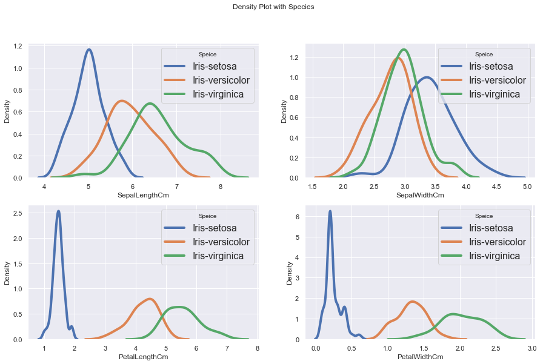
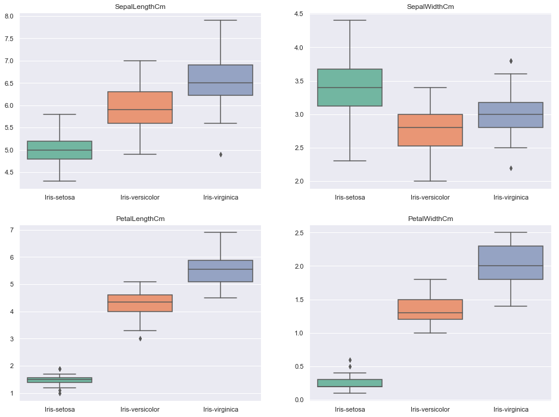
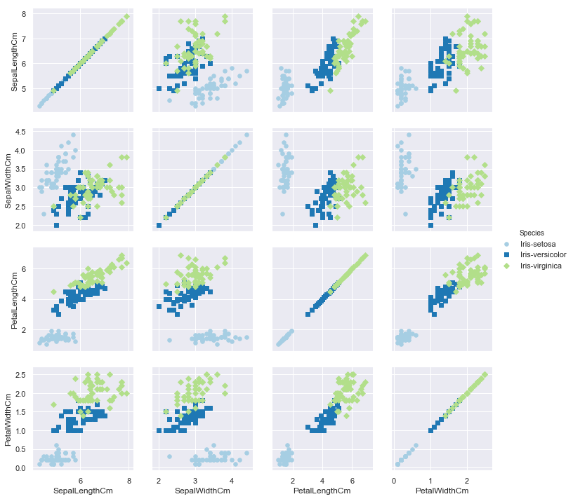

import numpy as np import pandas as pd import matplotlib import matplotlib.pyplot as plt import seaborn as sns;sns.set()
1.Data Processing
This dataset consists of 150 records and 6 columns, including ‘Id’, ‘SepalLengthCm’, ‘SepalWidthCm’, ‘PetalLengthCm’, ‘PetalWidthCm’ and ‘Species’. First of all, I checked NA, abnormal data in the dataset. There are no missing values and abnormal data in the dataset.
1 2 3 4
#import data iris_data = pd.read_csv("/Users/zhengyaohong/Documents/study/ZTGG_DS/data/Iris.csv") iris_data.info() iris_data.head()
To easily explore the distributions of numerical features, I use density plots combined with histograms to provide a sense. As the graph shows, length and width of sepal are nearly normal distributed, while those of petal are Search bimodal distributed. This difference may caused by sepices, so I will add speices as a lengend in the density plots to prove my hypothesis.
1 2 3 4 5 6 7 8 9 10 11 12 13 14
#density plots of features columns = iris_data.columns plt.figure(figsize=(10,10)) plt.suptitle('Density Plot and Histogram of each feature') for i in range(1,5): feature = columns[i] plt.subplot(2,2,i) sns.distplot(iris_data[feature], kde=True, norm_hist=True, color = 'darkblue', hist_kws={'edgecolor':'black'}, kde_kws={'linewidth': 4}) plt.title('Density Plot and Histogram of {}'.format(feature)) plt.ylabel('Density') plt.show()
By looking at density plots with speices, I find Iris-setosa tends to have much smaller petals compared to the other two speices. Also, Iris-virginica is likely to have shorter but wider sepals. Comparing the other two speices, we can see that Iris-virginica’s petals are tend to be larger than Iris-versicolor’s. However, sepal width may not be able to help us distinguish these two speices, because of their similar distribution.
1 2 3 4 5 6 7 8 9 10 11 12 13 14
#density plots of with speices species = iris_data['Species'].unique() plt.figure(figsize=(15,9)) plt.suptitle('Density Plot with Species')
for i in range(1,5): feature = columns[i] plt.subplot(2,2,i) for speice in species: subset = iris_data.loc[iris_data['Species']==speice, feature] sns.distplot(subset, kde=True, norm_hist=True, hist=False, kde_kws={'linewidth': 4}, label=speice) plt.legend(prop={'size': 16}, title = 'Speice') plt.ylabel('Density')

2.2 Box Plots
Box plots are also useful to show distributions of variables. The following graph provides similar conclusion as I mentioned.
1 2 3 4 5 6 7 8 9 10
plt.figure(figsize=(16,12))
# distribution of view counts of different categories for i in range(1,5): feature = columns[i] plt.subplot(2,2,i) sns.boxplot(x=iris_data['Species'], y=iris_data[feature], palette='Set2') plt.xlabel('') plt.ylabel('') plt.title(feature)

2.2 Scatter Plots
To explore the relationships between these numerical variables, I use scatter plots. Here are my observations:
For all speices, sepal length and sepal width are linear related. And petal length and petal width are linear related.
For setosa, its petal length and width do not relate to sepal length or width. While for versicolor and virginica, the relationship between sepal length and petal length as well as the relationship between sepal width and petal width exist.
1 2 3 4 5
# relationship between numerical features df = iris_data.drop(['Id'], axis=1) g = sns.PairGrid(df, hue='Species', hue_kws={"marker":['o','s','D']}, palette='Paired') g = g.map(plt.scatter, s=30) g = g.add_legend();

2.3 Heatmap
Correlation coefficients are used to measure the strength of the relationship between two variables. So I use a heatmap to visualize correlation coefficients.